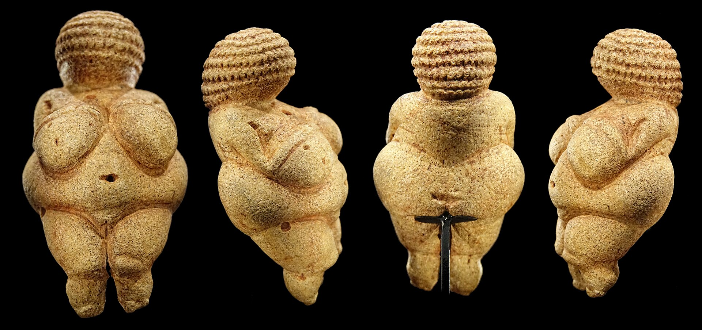
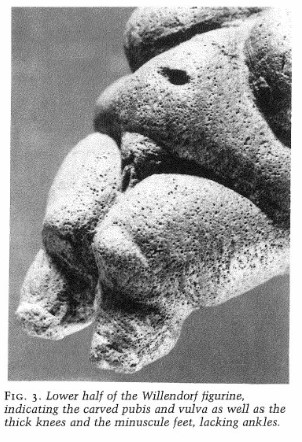
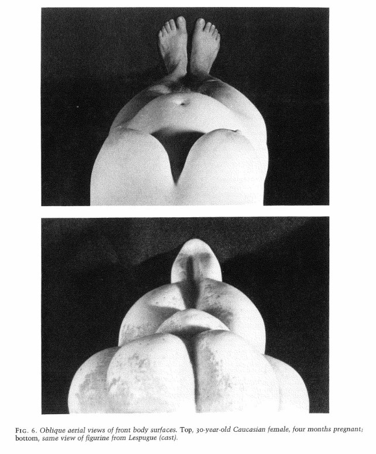
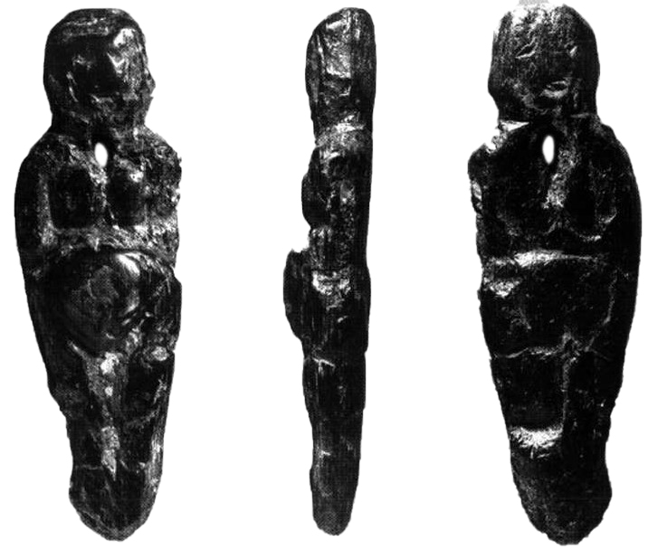

L'abondance de représentations féminines pendant la préhistoire a toujours soulevé de nombreuses questions chez les chercheurs et agrémenté l'imaginaire collectif d'histoires et de stéréotypes divers et variés. On observe ces représentations dès le début de l'Aurignacien1 à travers deux formes prédominantes ; Les représentations féminines " en pied " et les sexes féminins. Les œuvres " en pied " sont reconnaissables par la représentation du corps tout entier, et peuvent être classées dans différentes sous-catégories comme les ronde-bosses, les bas-reliefs et les représentations en deux dimensions. Les sexes féminins sont quant à eux représentés en deux dimensions, les techniques varient en fonction des régions, en Ardèche (Grotte de Chauvet), on utilisait de la peinture et des tracés digités2 tandis qu'en Aquitaine et dans le Périgord, les sexes étaient réalisés par un travail de piquetage sur calcaire. La signification autour de ces représentations reste, encore aujourd'hui, discutée et éclatée en plusieurs théories.
Au XIXe siècle, une abondante littérature s'était développée autour de la place de la femme dans les sociétés " primitives " dans laquelle on expliquait alors le système familial et " matrimonial ", de l'endogamie3 primitive à l'exogamie4, des concepts alors développés par l'ethnologue anglais McLennan. Son ouvrage Primitive marriage (1865) est inspiré des enlèvements des mariées dans certaines sociétés primitives, et cela l'emmena sur la théorie de " survivance culturelle ". Les ouvrages présentaient une évolution obligatoire, une succession de phases par lesquelles l'humanité devait passer, d'une ère sauvage, sans lois, aux civilisations " structurées ", du matriarcat primitif au patriarcat des sociétés occidentales contemporaines.
Cette vision des sociétés primitives et de la femme fut réfutée au milieu du XXe siècle, de vraies études ethnologiques ont été menées et ont réinvesti l'image de la structure du couple et la répartition du travail entre les sexes dans les communautés de chasseurs-cueilleurs préhistoriques. Les stéréotypes ont alors volé en éclats ; les femmes ne s'occupaient pas exclusivement des enfants et des tâches subalternes que les hommes leur laissaient, elles avaient un véritable rôle de pourvoyeuse de provisions et chassaient tout autant que les hommes.
*
Les Vénus préhistoriques sont abondantes en nombre, mais aussi en formes, en matériaux et en significations. Pendant longtemps ces statuettes étaient la représentation même de l'idéal masculin préhistorique, notamment à travers les rondeurs opulentes des parties sexualisées et sexuelles de la femme : les seins, les fesses, le sexe et les cuisses. La Vénus de Willendorf fig.1 est un très bon exemple de cette esthétique, réalisée il y a 22 000 à 21 000 av. J.-C., cet objet est d'une finesse et d'une symétrie déconcertante. On comprend facilement que l'auteur a souhaité mettre en avant les caractères sexuels de la femme puisque tout est disproportionné, les cuisses semblent minuscules face aux seins et au ventre. La Vénus aurait alors été un objet purement érotique, créé par des hommes (fantasmés à travers le filtre de L'homme des cavernes, violent et hypersexuel) pour les hommes et la satisfaction de leurs besoins.
 Cette théorie est réfutée par de nombreux ethnologues, notamment Leroy McDermott qui propose une autre signification derrière la production de toutes ces Vénus. Dans une étude en 19965, il avance un tout nouveau point de vue. Il n'est pas d'accord avec certains chercheurs qui voyaient l'esthétique des corps des Vénus schématique et abstraite. En réalité, ces corps " opulents " et " disproportionnés " seraient bel et bien fidèles à la réalité anatomique d'une femme, mais selon deux conditions. La première serait la représentation d'une femme enceinte et la deuxième, celle du point de vue de la femme elle-même, observant son corps métamorphosé par la grossesse. fig.2 Les Vénus seraient alors créées par les femmes, tels des auto-portraits, des témoins de leur fertilité. La première chose qu'elles pouvaient voir en baissant leur tête était leur poitrine et leur ventre, cela expliquerait alors la taille disproportionnellement réduite des jambes et des pieds mais aussi de la tête.
La grossesse est un moment très important dans la vie d'une femme, mais il est aussi très mystérieux. Cette transformation du corps peut s'avérer effrayante et douloureuse, ou au contraire, magique, porteuse d'un sens plus profond et plus spirituel. Pendant très longtemps, on voyait les Vénus comme un culte de la fécondité et un appel à la procréation, cette idée a notamment été portée par l'Abbé Breuil6, persuadé que tout l'art paléolithique était tourné vers la fécondité.
Les fouilles archéologiques ont le plus souvent retrouvé les Vénus dans un habitat, en plein air ou en grotte, mais rarement dans des sépultures. Elles ne seraient pas un objet caché et secret mais plutôt porté au quotidien, montré à la vue de tous, ce qui expliquerait la grande diffusion géographique des Vénus, que l'on peut retrouver en Russie comme en France. Certaines statuettes possèdent une perforation pour pouvoir être portées en pendentif fig.3 et cela appuie sur l'hypothèse d'une amulette, une sorte d'objet protecteur que la femme porterait sur elle, assez naturellement. Claudine Cohen7 va plus loin et se pose la question du consommable après avoir remarqué et retrouvé certaines Vénus dans des fosses de rejet. Les femmes jetaient-elles leurs amulettes après qu'elle leur ait servi ? Quelle était leur fonction ? Il y avait sans doute une envie de protéger ce moment délicat, en couche ou pendant la grossesse, et les femmes s'y rattachaient peut-être, comme une entité qui veillerait sur elles.
Le culte de la " Déesse mère " est une théorie dans laquelle la femme serait placée au premier plan, dans une société matriarcale des origines où elle aurait la main mise sur la société et le reste des individus. La Déesse mère est un être cosmique, un symbole de la fertilité des Hommes et de la terre, c'est un pouvoir qui pourrait alors expliquer les nombreuses représentations de femmes en son honneur. Cette théorie court depuis le 19ème siècle et malgré les nombreuses critiques qui l'accompagnent, cette idée d'un pouvoir matriarcal des origines revient régulièrement sur les devants de la scène anthropologique. On peut tout de même noter que l'archéologie féministe contemporaine veut se débarrasser de ce schéma enraciné dans les esprits et arrêter d'accorder aux femmes du passé un pouvoir qu'elles n'ont sans doute jamais eu. Voici un extrait très parlant du livre La femme des origines, images de la femme dans la préhistoire occidentale (2003), de Claudine Cohen, qui exprime cette idée ; " Cautionner le mythe de la déesse préhistorique, c'est pérenniser en la divinisant l'image éternelle de la femme définie par sa passivité et sa fécondité, laissant au héros mâle le privilège de l'individualité et de l'action. ". C'est une idée qu'on retrouve chez Donna Haraway8, notamment lorsqu'elle construit son cyborg pour effacer et contrer tous ces mythes des origines qui retiennent encore la femme dans un carcan de verre.
Aucune de ces théories ne peuvent être vraiment prouvées et il en existent d'autres, elles font des vas et vient dans la discussion éternelle de l'anthropologie, sans pour autant apporter de certitudes. Mais ces débats resteront toujours un terreau fertile dans lequel la recherche et la science évolueront, et d'une manière ou d'une autre, trouveront des réponses à toutes nos questions.